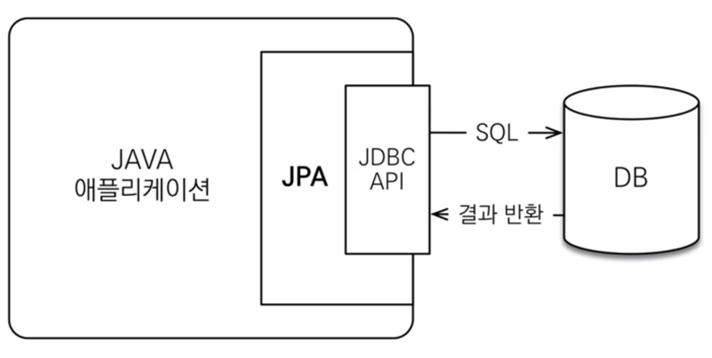
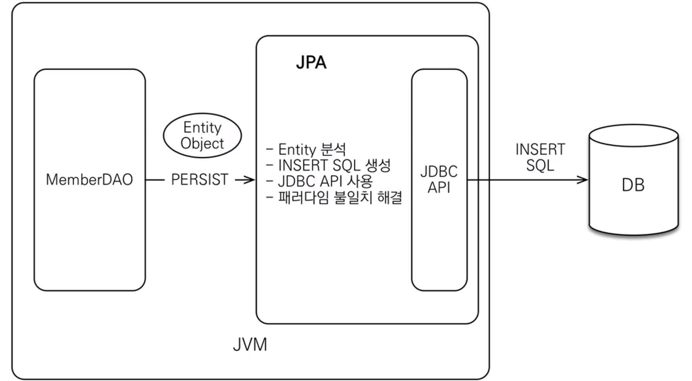
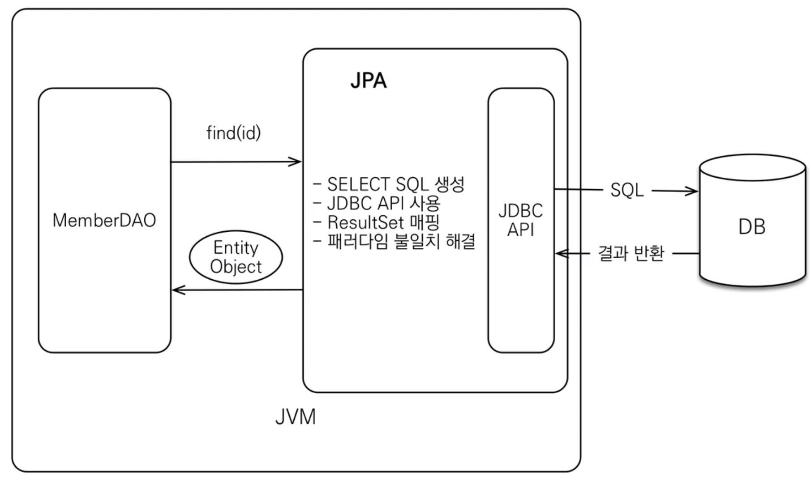

보기
-
JAVA의 ORM(Object-Relational Mapping) 기술 표준
- 객체는 객체대로, RDB는 RDB 대로 설계 후 ORM으로 중간에서 매핑
- 객체는 객체대로, RDB는 RDB 대로 설계 후 ORM으로 중간에서 매핑
-
애플리케이션과 JDBC 사이에서 동작
동작  저장  조회 
-
SQL 중심의 개발에서 객체 중심으로 개발 가능
- 벤더 독립성
- 객체 RDB의 패러다임 불일치 해소
- 상속, 연관관계, 객체 그래프 탐색, 비교 등
∵ 개발자가 jpa 메서드를 사용하면, 그에 맞게 JPA가 SQL을 작성하기 때문
- 상속, 연관관계, 객체 그래프 탐색, 비교 등
∵ 개발자가 jpa 메서드를 사용하면, 그에 맞게 JPA가 SQL을 작성하기 때문
-
CRUD
- 저장 : em.persist(member);
- 조회 : Member member = em.find(memberId);
- 수정 : member.setName("memberA");
- 삭제 : em.remove(member);
-
유지보수에 용이
- 컬럼이 변경되더라도 객체의 필드만 수정하면 되고, SQL은 따로 처리가 필요하지 않음
- 컬럼이 변경되더라도 객체의 필드만 수정하면 되고, SQL은 따로 처리가 필요하지 않음
-
신뢰할 수 있는 데이터 계층
- 지연 로딩을 이용한 자유로운 객체 그래프 탐색이 가능
- 지연 로딩을 이용한 자유로운 객체 그래프 탐색이 가능
-
동일 트랜잭션 내에서 조회한 엔티티는 같음을 보장 (≒ Java 컬렉션)
-
성능 최적화
-
1차 캐시 동일성 보장
- 같은 트랜잭션 내에서 같은 객체 반환(캐싱)
- 1번째 조회는 쿼리를 날리고, 다음부터는 메모리에서 가져옴
-
트랜잭션을 지원하는 쓰기 지연(transactional write-behind)
- 트랜잭션 커밋 시점까지 INSERT SQL을 모아둠
- JDBC Batch SQL 기능을 사용해 한 번에 전송
- UPDATE, DELETE의 경우, 트랜잭션 커밋 시 SQL을 실행하고 커밋
- 이 때, 트랜잭션 커밋 전까지 DB에 Row Lock이 걸리지 않음
-
지연 로딩(Lazy)과 즉시 로딩(Eager)
- 지연 로딩 : 객체가 실제 사용될 때 로딩
- 즉시 로딩 : JOIN SQL로 연관된 객체까지 한 번에 미리 조회
- 연관된 객체의 사용빈도를 고려하여 선택
-